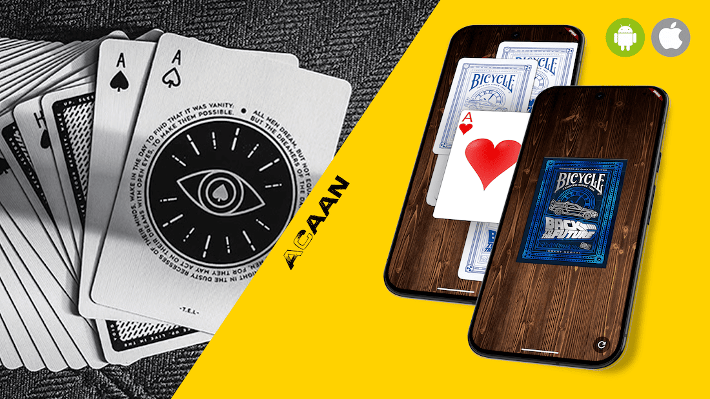

Any Card At Any Number — a card-magic effect brought to your phone.
ACAAN — Any Card At Any Number — is a mobile application built around the classic card-magic effect of the same name. The performer lets a spectator freely name a card and a number; the app then guides the reveal so that exact card turns up at exactly that position in the deck.
The flow is fully gesture-driven: pick a suit and value from the closed deck, watch the cards scatter across the screen, then drag and flip them until the chosen card magically appears under the first tap. It is developed with Flutter and Dart, running as a cross-platform app on Android and iOS.
Application logic: deck state management, card positioning via Offset coordinates,
z-index reordering for card stacking, and gesture handling.
Cross-platform UI framework for Android and iOS — drives the splash screen, deck/card widgets, flip and scatter animations, and drag gestures.